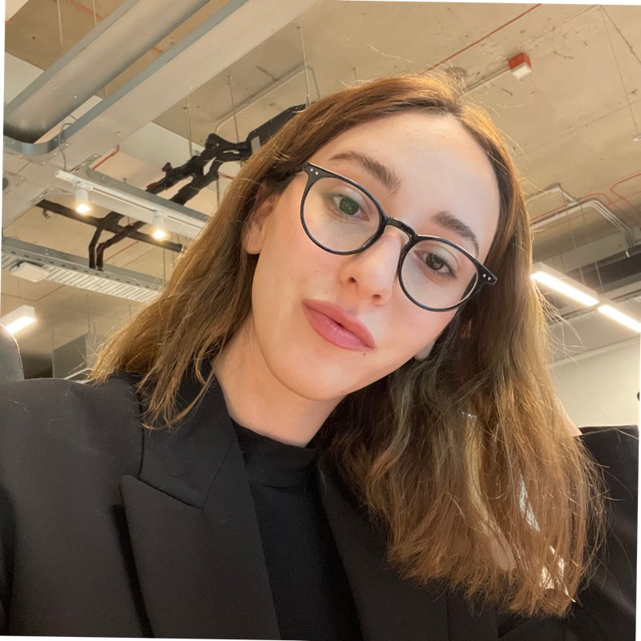

My Resume
Summary
I am a dedicated, hardworking and skillful individual with experience in Management.
Education
- Bachelor Degree in Economics (2021-2024)
Work Experience
- Evolution - Game Presenter (Feb 8 - Jul-8)
- Evolution - Service Dupport Specialist (Jul 2018 - May 2020)
-
Responsible for managing table untime and minimising lable downtime as much as possible by proactively deaing with different type of human and technical issues. following proper escalation path notifying Licensees in a timely manner about issues occurred and registering incidents
Internal systems.
- Evolution - Customer Support Specialist (May 2020)
- Monitor multiple Chat dashboards;
- Handle end users’ queries in live chat and ensure a prompt response;
- To perform initial technical investigation basing on the information in Evolution Back office and game server logs, Kibana and systems trained.
- Evolution - Service Support Team Lead (Jun 2020 - Sep 2022)
- Ensuring correct measurement and achievement of key performance indicators (KPI's) in the studio
- Delivering problem solving and trouble-shooting solutions in response to software and process issues that may arise
- Managing studio by conducting and overseeing the performance management process, employee relations issues, talent management, team collaboration, work schedules, bonus calculations, headcount, and training
- Reviewing, updating, inventing new procedures and rules, new system testing, new table launching
- Evolution - Acting Seervice Support Manager Gerogia & Armenia (Oct 2022 - Mar 2023)
- Leading the Service Support Department of Georgia and Armenia and responsible to control, develop and manage all activities of teams in order to maintain and improve Key Performance Indicators of the departments.
Participation in financial and business planning, and accountability for departments costs, as well as representative of SSD in front of other units
- Evolution - Senior Service Support Team Lead Georgia &Armenia (Mar 2023 - Present)
- Senior Service Support Team Lead is responsible for leading and developing the Service Support Team Lead Team.
- Acts as a front-line extension of the manager's authority and is responsible for monitoring and controlling fulfillment of all procedures and duties by Service Support Team Leads and distributing workload and projects.
- The role is also intended to support the Service Support Manager in facilitating efficient operations within the department.
Skills
- Team Management
- Recruiting
- Critical thinking and problem solving
- Professionalism and strong work ethic
- Leadership
- Mentoring
- Microsoft Office Suite
- Financial planning
Languages
Other
© Medea Shatakishvili. All rights reserved.
Document